Lesson content · 课文
Lesson 12: Whose is this ...? · 这……是谁的？
Listen and answer the questions. 听录音并回答问题。
Whose is this …? This is my/your/his/her … 这……是谁的？这是我的／你的／他的／她的……
Whose is that …? That is my/your/his/her … 那……是谁的？那是我的／你的／他的／她的……
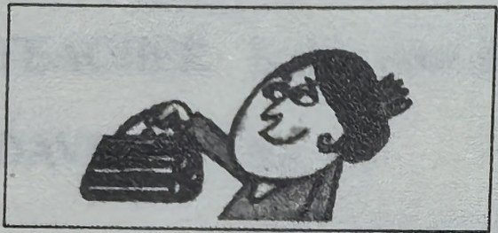
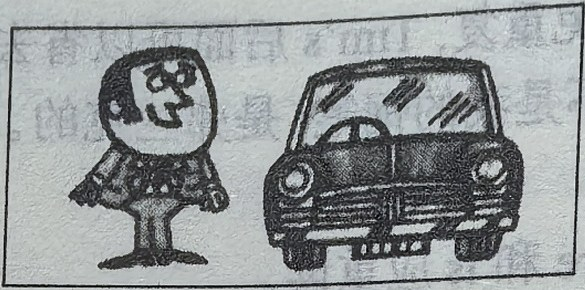
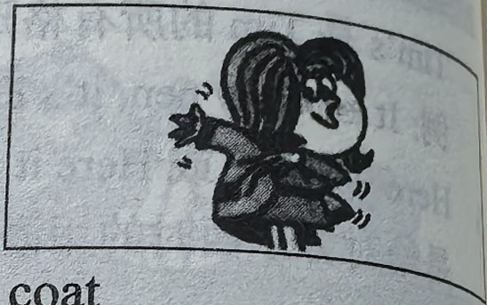
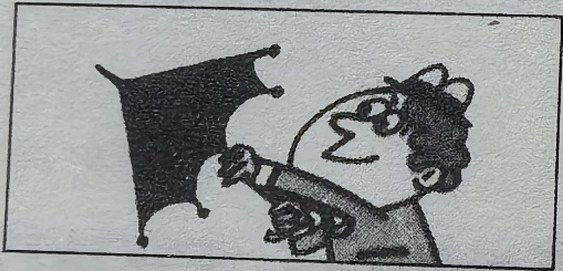
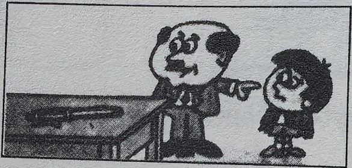
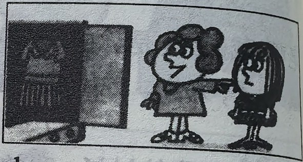
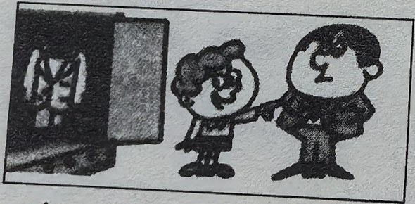
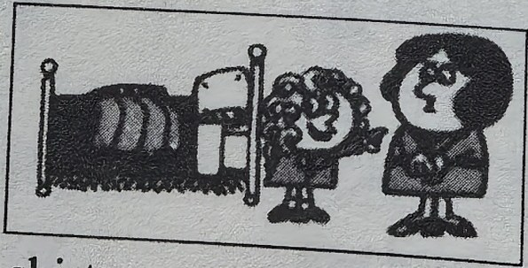
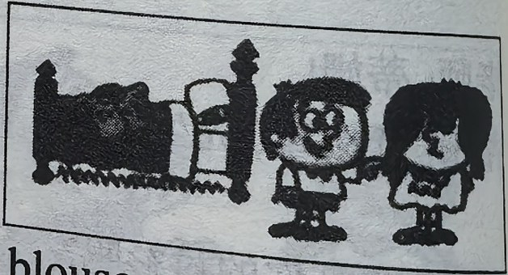
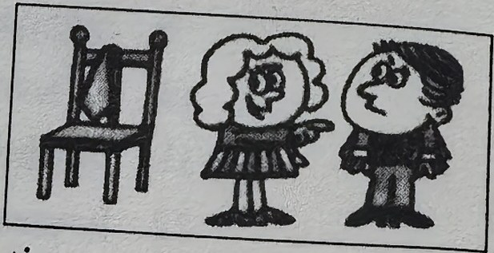
New words and expressions · 生词和短语
| Word · 单词 | Pronunciation · 音标 | Meaning · 词义 |
|---|---|---|
| father | /ˈfɑːðə/ | n. 父亲 |
| mother | /ˈmʌðə/ | n. 母亲 |
| blouse | /blaʊz/ | n. 女衬衫 |
| sister | /ˈsɪstə/ | n. 姐，妹 |
| tie | /taɪ/ | n. 领带 |
| brother | /ˈbrʌðə/ | n. 兄，弟 |
| his | /hɪz/ | possessive adjective 他的 |
| her | /hɜː/ | possessive adjective 她的 |
Practice · 课文练习
Written exercises · 书面练习
A. My, your, his or her
Complete these sentences using my, your, his or her. 完成以下句子，用 my、your、his 或 her 填空。
Example · 例句
Hans is here. That is his car.
-
textbook: A. My, your, his or her — Stella is here. That is ____ car.
-
textbook: A. My, your, his or her — Excuse me, Steven. Is this ____ umbrella?
-
textbook: A. My, your, his or her — I am an air hostess. ____ name is Britt.
-
textbook: A. My, your, his or her — Paul is here, too. That is ____ coat.
B. Possessives · 所有格
Write questions and answers using ’s, his and her. 模仿例句提问并回答，选用名词所有格形式 ’s 或代词所有格形式 his 或 her。
Example · 例句
shirt / Tim → Whose is this shirt? It’s Tim’s. It’s his shirt.
-
textbook: B. Possessives · 所有格 — handbag / Stella
-
textbook: B. Possessives · 所有格 — car / Paul
-
textbook: B. Possessives · 所有格 — coat / Sophie
-
textbook: B. Possessives · 所有格 — umbrella / Steven
-
textbook: B. Possessives · 所有格 — pen / my son
-
textbook: B. Possessives · 所有格 — dress / my daughter
-
textbook: B. Possessives · 所有格 — suit / my father
-
textbook: B. Possessives · 所有格 — skirt / my mother
-
textbook: B. Possessives · 所有格 — blouse / my sister
-
textbook: B. Possessives · 所有格 — tie / my brother
-
textbook: B. Possessives · 所有格 — pen / Sophie
-
textbook: B. Possessives · 所有格 — pencil / Hans
Practice worksheet · 配套练习
A. Questions
Write a question with Whose for each answer. 模仿例句完成以下练习。
Example · 例句
Whose is this blue umbrella? — This blue umbrella is my brother’s.
-
worksheet: A. Questions — That shirt is Tim’s.
-
worksheet: A. Questions — This tie is my brother’s.
-
worksheet: A. Questions — That blouse is my sister’s.
-
worksheet: A. Questions — This car is Mr. Blake’s.
-
worksheet: A. Questions — That white shirt is Paul’s.
B. Structure
Fill in my, your, his or her. 用所有格形容词 my、your、his 或 her 填空。
-
worksheet: B. Structure — Is that Tim’s shirt? — Yes, it is. It’s ____ shirt.
-
worksheet: B. Structure — Is this Emma’s umbrella? — Yes, it is. It’s ____ umbrella.
-
worksheet: B. Structure — Is that Steven’s new coat? — Yes, it is. It’s ____ new coat.
-
worksheet: B. Structure — Is this my watch? — Yes, it is. It’s ____ watch. (It isn’t my watch!)
-
worksheet: B. Structure — Is that your ticket? — Yes, it is. It’s ____ ticket.
-
worksheet: B. Structure — Is this Mrs. Brown’s Ford? — Yes, it is. It’s ____ new Ford.
C. Structure
This is an apostrophe: ’. Add apostrophes where necessary. 在必要的地方加上撇号（’）。
-
worksheet: C. Structure — This is Tims shirt, that is his fathers coat, and this is Stevens tie.
-
worksheet: C. Structure — This is my brothers old car and thats my fathers new car.
-
worksheet: C. Structure — This is my mothers umbrella and thats my sisters handbag.
D. Situation
What do you say? 根据以下情景写出你应该说的话。
-
worksheet: D. Situation — You give, pass or throw something to someone.
Original images · 原图对照
Expand a page to compare it with the transcription. Open the original in a new tab to zoom in.
展开原图核对文字，也可以在新标签页打开原图放大查看。
Lesson text and oral practice · 课文与口头练习
Open original · 打开原图 ↗ Download original · 下载原图

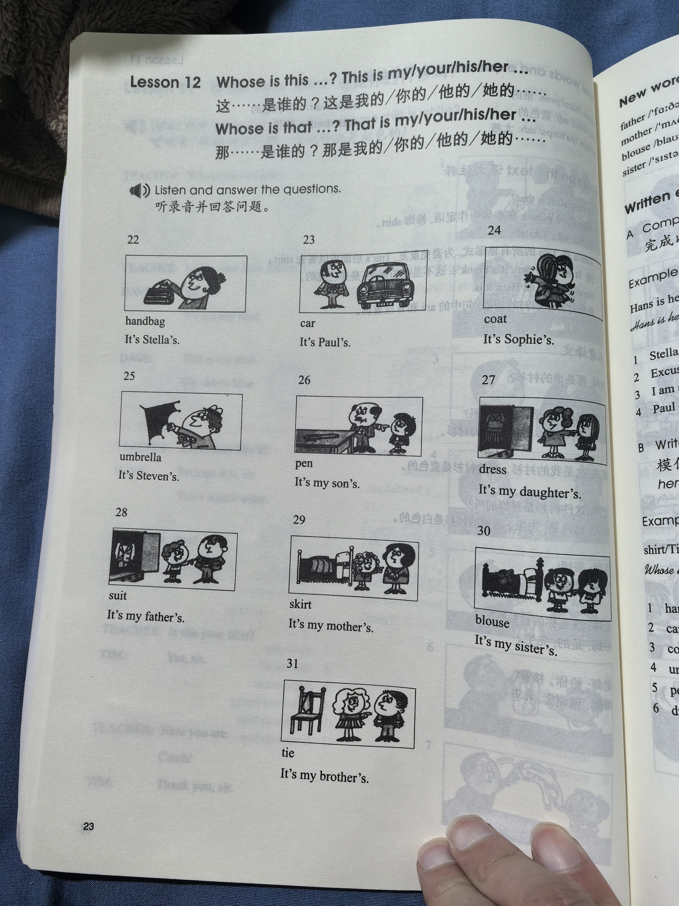
Vocabulary, notes and written exercises · 生词、注释与书面练习
Open original · 打开原图 ↗ Download original · 下载原图

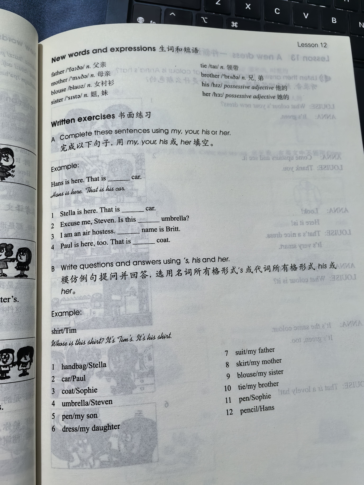

Grammar practice · 语法练习
Patterns: Whose is this/that ...?; This/That is my/your/his/her ... .
I. Rewrite following the example
Example: Whose shirt is that? -> Whose is that shirt?
- Whose pencil is this?
- Whose tie is that?
- Whose coat is this?
- Whose umbrella is that?
- Whose blouse is that?
- Whose car is this?
- Whose watch is this?
- Whose handbag is that?
- Whose dress is this?
II. Answer using the cue
Example: Whose is that blue shirt? Is it Tim's? (Steven) -> No, it isn't Tim's. It's Steven's.
- Whose is that black umbrella? Is it Tony's? (my brother)
- Whose is this dirty coat? Is it Robert's? (Emma)
- Whose is that new Ford? Is it your father's? (that mechanic)
- Whose is this small handbag? Is it Ruth's? (Diana)
- Whose is that long blouse? Is it your sister's? (Helen)
- Whose is this white skirt? Is it your sister's? (my mother)
- Whose is this old house? Is it William's? (Maria)
- Whose is that fat dog? Is it Sophie's? (my daughter)
- Whose is that nice tie? Is it Paul's? (my brother)
Your notes and answers
Use this space for longer responses or exercises that do not have an individual answer box.